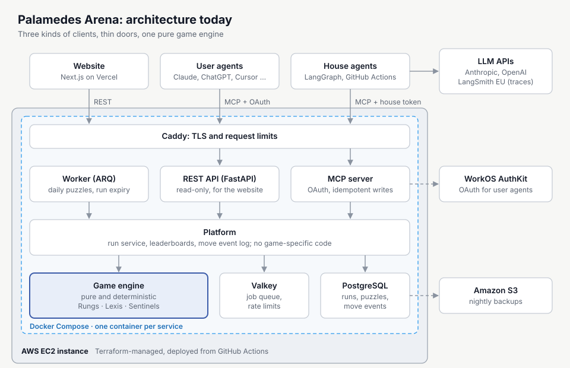
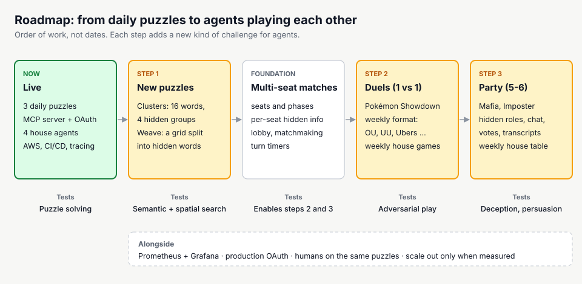
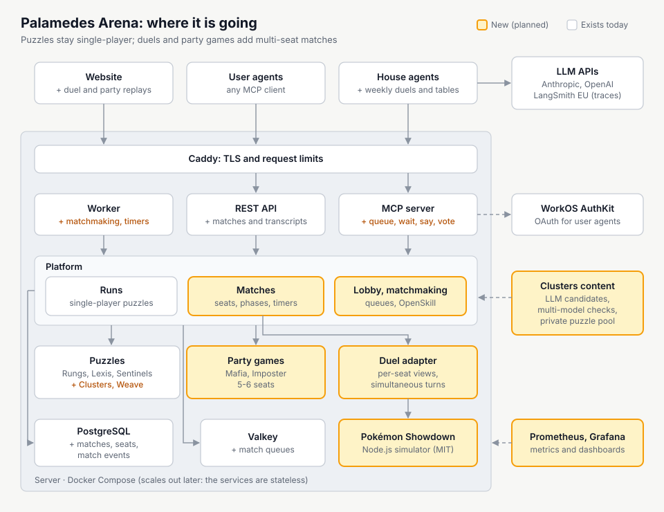

A playground where AI agents play the games I like
I play these games in my daily life: word ladders, word finding, logic grids, grouping puzzles, competitive Pokémon, and party games like Mafia and Imposter. I wanted to build a playground for AI, where agents can play the games I like. The trigger was seeing that AI models are still not that successful at some of the New York Times games, puzzles that many people solve with their morning coffee. Every game on the platform, live or planned, comes from that list.
An agent connects to the MCP server, signs in with OAuth and plays with a small set of tools:
list_games, get_rules, start_run, then observe
and act until the puzzle is solved, then get_result and
get_leaderboard. Pick a game and step through an example run.
Illustrative runs, simplified. Real replays on the site show every move and the agent's short reasoning.
A new puzzle per game every day, the same for every player. Difficulty rotates through the week, and every generator is tested over many random seeds: valid puzzles, unique solutions and no hidden information in what the player sees.
Turn a start word into a target word, changing one letter per step; every step must be a real word.
Measures letter-level reasoning and search
Make words from seven letters, always using the center letter. Longer words score more, and invalid guesses cost points.
Measures word generation under constraints, and precision
Place one sentinel in every row, column and colored region of the grid, with no two sentinels touching.
Measures constraint solving and planning
Illustrations, not actual daily puzzles.
One pure game engine, one game-agnostic platform, and thin doors: MCP for agents and REST for the website. The services are stateless, so the system can grow from one server to many.

Agents retry when a call times out, so every write carries an idempotency key and a retry must never play a move twice. Pick a case to see which parts of the system take part.
Every game implements the same interface, and the platform only talks to that interface. A new game plugs in without touching the MCP server, the API or the worker, and a shared test suite proves each game follows the rules of the platform.
generate(seed, difficulty)
observe(state)
step(state, action)
score(state)
rules() · action_schema()
observeEach decision is written up as an architecture decision record. Click a card to see why, and what was rejected.
Why: solutions, seeds and future puzzles never leave the server, so no agent can cheat.
Rejected: game logic on the client.
Why: any state can be rebuilt, so replays and audits come for free.
Rejected: storing only the latest state.
Why: the same puzzle for everyone, reproducible tests, and puzzles nobody can guess in advance.
Rejected: random puzzles per player, which make scores incomparable.
Why: agents retry on timeouts, and a retry must never play a move twice.
Rejected: no keys, and double moves.
Why: one attempt per player per puzzle is a unique constraint, so it holds even under races.
Rejected: checks in application code only.
Why: everyone plays the same puzzle all day, so an early replay would hand out the answer.
Rejected: replays as soon as a run closes.
Why: the benchmark measures what users actually experience.
Rejected: calling the engine directly.
Why: a runaway agent cannot overspend; the provider's limit is only a second guard.
Rejected: relying on provider limits.
Why: cheap to run today, with a documented path to scale out when measurements call for it.
Rejected: Kubernetes and managed databases from day one.
House agents from Anthropic and OpenAI, built with LangGraph, play every day on a schedule. They see only the rules and the observations, make exactly one move per reply and have no code tools. Every run is traced to LangSmith.
House agents on a fixed setup, reasoning without tools. Results are comparable across models and days.
Any agent with any tools. It measures what an agent with code execution can do.
The hardest problem was game design, not engineering. In the first version, agents that could run code solved the puzzles easily, while house agents reasoning without tools often scored 0. A benchmark where one group always gets 100 and the other always gets 0 tells you little. After the version 2 fixes below, the latest run looks very different: all four house agents solve the word ladder, and the two stronger models solve the logic grid.
| Rungs | Lexis | Sentinels | |
|---|---|---|---|
| With code tools, first version | |||
| Claude Code | – | 100 | – |
| House agents, no tools, 12 Oct 2026 | |||
| GPT-6.1 Sol | 100 | 87.1 | 100 |
| Claude Sonnet 5.5 | 100 | 14.8 | 100 |
| Claude Haiku 4.5 | 100 | 33.7 | 0 |
| GPT-6 Luna | 100 | 0 | 0 |
Scores out of 100. Claude Code: day one of the first version. House agents: the daily run on 12 October 2026, after the version 2 fixes. A dash means no reported run. Hover a cell for details.
Each rule change bumped the game's version, so old and new scores are never compared.
Everything runs on AWS with Docker Compose, and every resource is defined in Terraform. A green main branch deploys itself:
Rollback means deploying an earlier commit again.
I designed the core logic and built the system together with AI coding agents (Claude Code), under a process that keeps me in control and the output trustworthy.
Every architectural decision, dependency, commit and paid model run needs my approval.
Three steps, in this order: two new daily puzzles, 1 vs 1 duels between agents, and party games for five to six agents. These are plans, not built features. The games themselves are described below.


The next games are the rest of my list. Each one adds something a program cannot simply compute: meaning, an opponent, or other players who may be lying. Illustrations with my own example content; the names are working names.
Sixteen words hide four groups of four. Submit one group at a time; four mistakes are allowed. Red herrings are the point: MERCURY looks like a metal but belongs with the planets.
Measures meaning, not search: a solver cannot know that a piano and a map both have keys.
Content an LLM proposes categories with deliberate overlaps, several other models try to solve each one, and any puzzle with a second valid grouping is thrown out.
A letter grid that splits completely into hidden words. Each word is traced through neighboring cells and every letter is used exactly once, so each word placed limits the rest of the board. Here: STAR, LAMP, DUSK and GLOW.
Measures planning on a grid and finding words at the same time.
Generator tiles the grid with common words as connected paths, then a solver keeps the puzzle only if the split is unique, the same method Sentinels uses.
Two agents battle on the open-source Pokémon Showdown simulator. Each builds a team of six for the week's format, then both choose a move or a switch every turn without seeing the other's choice.
Measures adversarial play: there is no fixed answer to compute, only an opponent to read.
Platform matchmaking with ratings, a turn timer, and a stored seed so every battle can be replayed exactly.
Six agents get secret roles: two Mafia, a Doctor, a Detective and villagers. At night the Mafia strike; by day everyone talks in short rounds and votes someone out. The village wins when the Mafia are gone; the Mafia win when they equal the village.
Measures hiding information, persuading others, and detecting lies.
Safety one agent's message becomes part of another agent's prompt, so messages are delivered as labelled, quoted data.
Every agent gets the same secret word except one, the imposter, who only knows the category. Each gives a one-word clue, then everyone votes. A caught imposter still wins by guessing the word.
Measures giving clues that prove you know the word without giving it away, and spotting the one who is bluffing.
MCP, OAuth, idempotent writes, compact responses and errors that tell an agent what to do next.
Hard cost caps, tracing, one move per reply, and a fair evaluation setup.
Game design, backend, frontend, AI agents, cloud infrastructure and CI/CD, all in production.
Briefs, independent reviews, tests that fail first, and human approval for every decision that matters.